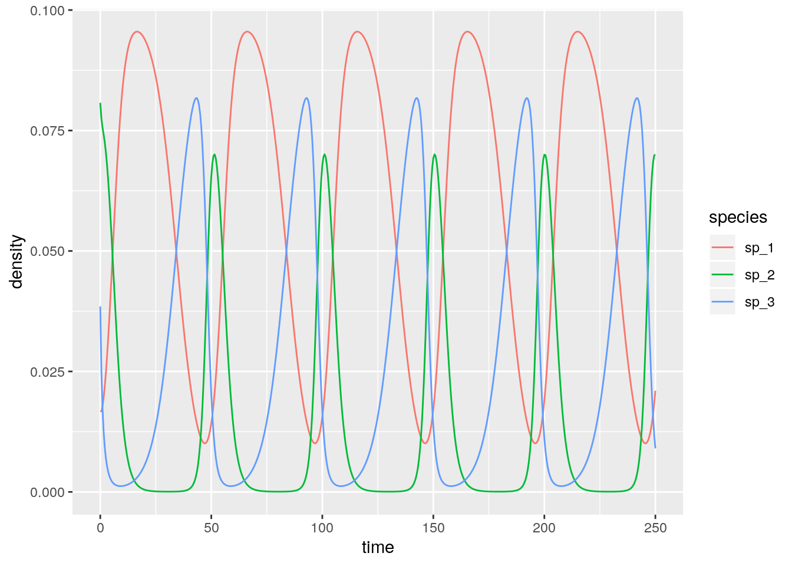
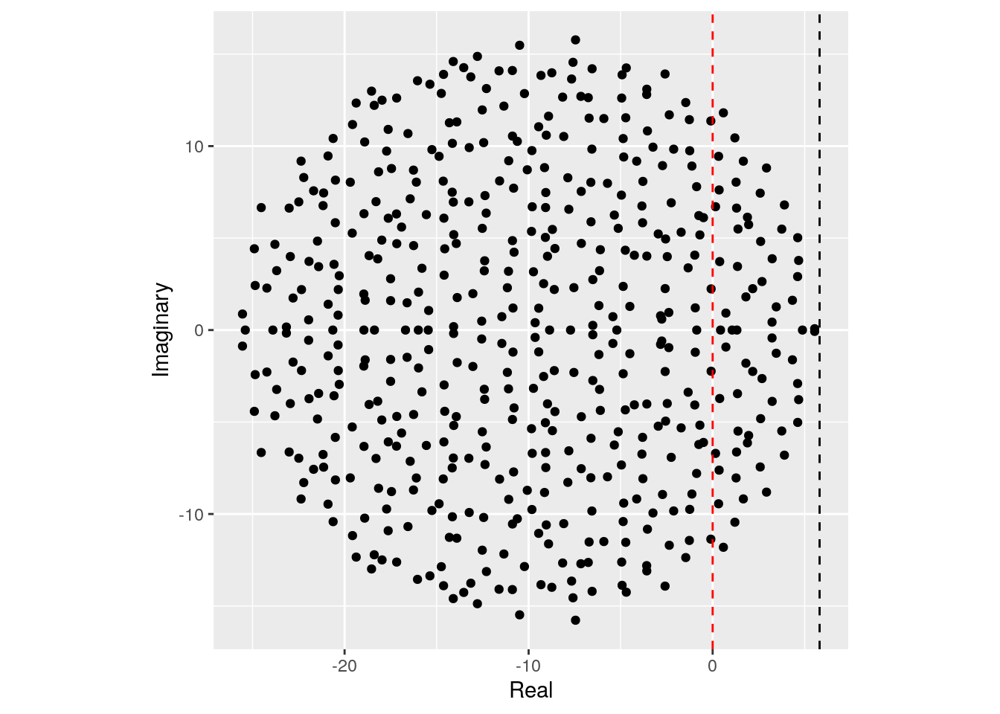

Chapter 2 Generalized Lotka-Volterra
2.1 History
2.2 Basic formulation
We can write the Generalized Lotka-Volterra model in a compact form as:
\[ \dfrac{dx(t)}{dt} = D(x(t))(r + A x(t)) \]
where \(x(t)\) is a (column) vector of length \(n\) containing the densities of all populations \(1, \ldots, n\) at time \(t\), \(r\) is a vector of “intrinsic growth rates” (or death rates, when negative), measuring the growth (decline) of population \(i\) when grown alone at low density, and \(A\) is a \(n \times n\) matrix of interaction coefficients. We use \(D(x)\) to denote the diagonal matrix with \(x\) on the diagonal.
2.3 A single population
The simplest case to study is that of a single population, in which case the equation becomes that of the logistic growth:
\[ \dfrac{dx(t)}{dt} = x(t)(r + a x(t)) \]
This is a separable ODE, with solution:
\[ x(t) = \frac{r}{e^{-r \left(k+t\right)}-a} \] where \(k\) is a constant. Setting \(x(0) = x_0\) (i.e., providing an initial condition), solving for the constant and substituting:
\[
x(t) = \frac{r {x_0} e^{r t}}{r-a {x_0} \left(e^{r t}-1\right)}
\]
As such, provided with the parameters \(r\) and \(a\), as well as an initial condition, we can determine the population size for any time \(t\). For example, in R:
library(deSolve) # integrate ODEs
library(tidyverse) # plotting and wrangling
# define the differential equation
logistic_growth <- function(t, x, parameters){
with(as.list(c(x, parameters)), {
dxdt <- x * (r + a * x)
list(dxdt)
})
}
# define parameters, integration time, initial conditions
times <- seq(0, 100, by = 5)
x0 <- 0.05
r <- 0.1
a <- -0.05
parameters <- list(r = r, a = a)
# solve numerically
out <- ode(y = x0, times = times,
func = logistic_growth, parms = parameters,
method = "ode45")
# now compute analytically
solution <- r * x0 * exp(r * times) / (r - a * x0 * (exp(r * times) - 1))
# use ggplot to plot
res <- tibble(time = out[,1], x_t = out[,2], x_sol = solution)
ggplot(data = res) + aes(x = time, y = x_t) +
geom_line() +
geom_point(aes(x = time, y = x_sol), colour = "red", shape = 2) +
ylab(expression("x(t)")) + xlab(expression("t"))
If \(a < 0\) and \(r > 0\), the population started at any positive value eventually reaches an equilibrium, which we can find by setting \(dx(t)/dt = 0\) and considering \(x \neq 0\):
\[ (r + a x) = 0 \to x = -\frac{r}{a} \]
2.3.1 Metapopulation dynamics
Consider a fragmented landscape in which habitable patches are connected by dispersal (for simplicity, suppose that all patches are reachable from any other). Call \(p(t)\) the proportion of patches occupied by the species of interest at time \(t\), and assume that a) an empty patch (the proportion of empty patches is \(1 - p(t)\)) is colonized by the species with rate \(c p(t)\), where \(c\) is the “colonization rate”, and b) that occupied patches become empty at rate \(e p(t)\) (“extinction rate”). We want to model the proportion of patches occupied by the population at time \(t\):
\[ \dfrac{d p(t)}{dt} = c p(t)(1 - p(t)) - e p(t) = p(t) (c - (c + e) p(t)) \]
which is equivalent to the logistic equation above with \(r = c\) and \(a = -(c+e)\). As such, asymptotically the proportion of patches occupied by the population will be \(-r/a = c / (c + e)\).
2.3.2 S-I-S model
Consider a population of individuals, each of which can be in one of two states: susceptible, or infective/infected. Call \(S(t)\) the proportion of susceptible individuals at time \(t\), and \(I(t)\) the proportion of infected individuals, with \(S(t) + I(t) = 1\). When individuals meet an infected individual can transmit the disease with rate \(\beta\); infected individuals recover from the disease with rate \(\gamma\), and return susceptible. We can write the system of equations:
\[ \begin{cases} \dfrac{d S(t)}{dt} = -\beta S(t) I(t) + \gamma I(t)\\ \dfrac{d I(t)}{dt} = \beta S(t) I(t) - \gamma I(t) \end{cases} \]
take the second equation, and substitute \(S(t) = 1 - I(t)\); rearranging:
\[ \dfrac{d I(t)}{dt} = \beta (1-I(t)) I(t) - \gamma I(t) = I(t)(\beta - \gamma -\beta I(t)) \]
which is again the equation for the logistic growth with \(r = \beta - \gamma\) and \(a = -\beta\). As such, provided that \(\beta -\gamma > 0\), a fraction \((\beta - \gamma) / \beta\) of individuals will be infected. The condition \(\beta -\gamma > 0 \to \beta > \gamma \to \beta/ \gamma > 1\) is often written as \(\mathcal R_0 = \beta/ \gamma > 1\).
2.4 Multi-species dynamics
2.4.1 Existence of an equilibrium
Returning to the multi-species system, and in analogy with the single species, we can look for stationary points (equilibria). If the matrix \(A\) is not singular, then we can look for a solution of \(r + Ax\) that has positive components (called a feasible equilibrium). If such point exists, it is unique and is the solution of \(Ax^\star = -r\), \(x^\star = -A^{-1}r\).
Suppose that the GLV has no feasible equilibrium. Then all trajectories (if bounded; some could grow to infinity) reach the boundary of \(\mathbb R^n_{0+}\). Practically, this means that to ensure coexistence of all species, it is necessary to have an equilibrium in the interior \(\mathbb R^n_{+}\).
2.4.2 Stability of an equilibrium
Suppose that a feasible equilibrium \(x^\star\) exists. Then we can ask whether it is attractive, i.e. if trajectories started at initial condition \(x(0)\) will eventually reach \(x^\star\). This problem is in general difficult to solve (but see below); as an alternative we can test for local asymptotic stability, i.e., ask whether the system will return to the equilibrium if perturbed infinitesimally away from it. In general, whenever we describe an ecological community as a system of nonlinear, autonomous ODEs:
\[ \frac{d x_i (t)}{d t} = f_i (x(t)) \;, \]
we define an equilibrium \(x^\star\) as a vector of densities such that:
\[ \left. \frac{d x_i}{d t} \right|_{{x}^\star} = f_i ({x}^\star) = 0 \quad \forall i \]
A given system might have a multitude of equilibria. When the system is resting at an equilibrium point, it will remain there unless it is perturbed away from it. Local stability analysis is a method to probe whether a system that is perturbed infinitesimally away from an equilibrium will eventually return to it, or rather move away from it.
DERIVATION HERE
The analysis is based on the Jacobian matrix of the system \(J\), whose elements are defined as:
\[ J_{ij} = \frac{\partial f_i({x})}{\partial x_j} \]
Each element of this matrix is therefore a function, whose value depends on \({x}\). When we evaluate the Jacobian matrix at an equilibrium point \({x}^\star\), we obtain the so-called “community matrix” \({M}\):
\[ M = \left. {J} \right|_{ {x}^\star} \] Note that, although each system has a unique Jacobian matrix, there are as many community matrices as there are equilibria. The community matrix details the effect of increasing density of one species on any other species around the equilibrium point.
The most notable property of the community matrix is that its eigenvalues determine the stability of the equilibrium \({x}^\star\): if all the eigenvalues have negative real part, then the system will eventually return to the equilibrium after sufficiently small perturbations; conversely, if any of the eigenvalues have positive real part, the system will move away from the equilibrium whenever perturbed. Therefore, depending on the sign of the “rightmost” eigenvalue of \({M}\), \(\lambda_1\), we can determine the stability of \({x}^\star\):
\[ \text{Re}(\lambda_1) \begin{cases} < 0 \to {x}^\star \quad \text{is stable}\\ > 0 \to {x}^\star \quad \text{is unstable} \end{cases} \]
Local asymptotic stability means that the equilibrium is stable with respect to infinitesimal perturbations (“local”), and that returning to the equilibrium could take a long time (“asymptotic”). Ecologists have also studied stronger forms of stability (e.g., “global stability”, in which all trajectories started at positive densities lead to the equilibrium).
For the GLV model, the Jacobian is easy to compute:
\[ J_{ij} = \frac{\partial f_i}{\partial x_j} = a_{ij} x_i \]
and
\[ J_{ij} = \frac{\partial f_i}{\partial x_i} = r_i + \sum_j a_{ij} x_j + a_{ii} x_i \]
At equilibrium \(r_i + \sum_j a_{ij} x_j = 0\), and therefore:
\[ M = \left. {J} \right|_{ {x}^\star} = D(x^\star)A \]
2.5 Types of dynamics
For a single population, there are only three types of dynamics that can be displayed by a GLV model: either the population grows to infinity, shrinks to zero, or asymptotically reaches a steady state.
Smale (1976) and Hirsch (1982) showed that limit cylces are possible for three or more species, and that any dynamics can be found for competitive GLV systems with five or more species.
The code necessary for some numerical explorations:
# Generalized Lotka-Volterra model
GLV <- function(t, x, parameters){
with(as.list(c(x, parameters)), {
x[x < 10^-8] <- 0 # prevent numerical problems
dxdt <- x * (r + A %*% x)
list(dxdt)
})
}
# function to plot output
plot_ODE_output <- function(out){
out <- as.data.frame(out)
colnames(out) <- c("time", paste("sp", 1:(ncol(out) -1), sep = "_"))
out <- as_tibble(out) %>% gather(species, density, -time)
pl <- ggplot(data = out) +
aes(x = time, y = density, colour = species) +
geom_line()
show(pl)
return(out)
}
# general function to integrate GLV
integrate_GLV <- function(r, A, x0, maxtime = 100, steptime = 0.5){
times <- seq(0, maxtime, by = steptime)
parameters <- list(r = r, A = A)
# solve numerically
out <- ode(y = x0, times = times,
func = GLV, parms = parameters,
method = "ode45")
# plot and make into tidy form
out <- plot_ODE_output(out)
return(out)
}A few examples taken from Barabás, J. Michalska-Smith, and Allesina (2016). First, a competitive system in which a feasible equilibrium does not exist, leading to the extinction of a species:
set.seed(1) # for reproducibility
r_1 <- rep(1, 3)
A_1 <- -matrix(c(10, 9, 5,
9, 10, 9,
5, 9, 10), 3, 3, byrow = TRUE)
# check the existence of feasible equilibrium
print(solve(A_1, -r_1)) # not feasible
x0_1 <- runif(3)
res_1 <- integrate_GLV(r_1, A_1, x0_1)
# [1] -0.08333333 0.25000000 -0.08333333Then, a case in which the equilibrium exists, and is attractive (stable):
set.seed(2) # for reproducibility
r_2 <- rep(10, 3)
A_2 <- -matrix(c(10, 7, 12,
15, 10, 8,
7, 11, 10), 3, 3, byrow = TRUE)
# check the existence of feasible equilibrium
print(solve(A_2, -r_2)) # feasible
x0_2 <- runif(3)
res_2 <- integrate_GLV(r_2, A_2, x0_2)
# [1] 0.1661130 0.3654485 0.4817276With three competitors we can find stable limit cycles:
set.seed(3) # for reproducibility
r_3 <- rep(1, 3)
A_3 <- -matrix(c(10, 6, 12,
14, 10, 2,
8, 18, 10), 3, 3, byrow = TRUE)
# check the existence of feasible equilibrium
print(solve(A_3, -r_3)) # feasible
x0_3 <- 0.1 * runif(3)
res_3 <- integrate_GLV(r_3, A_3, x0_3, maxtime = 250)
# [1] 0.05714286 0.01428571 0.02857143And with four or more species we can have chaos:
set.seed(4) # for reproducibility
r_4 <- c(1, 0.72, 1.53, 1.27)
A_4 <- -matrix(c(1, 1.09, 1.52, 0,
0, 0.72, 0.3168, 0.9792,
3.5649, 0, 1.53, 0.7191,
1.5367, 0.6477, 0.4445, 1.27), 4, 4, byrow = TRUE)
# check the existence of feasible equilibrium
print(solve(A_4, -r_4)) # feasible
x0_4 <- 0.1 * runif(4)
res_4 <- integrate_GLV(r_4, A_4, x0_4, maxtime = 500)
# [1] 0.3013030 0.4586546 0.1307655 0.35574162.6 The equilibrium is the time-average
Suppose that \(x(t)\) has a periodic orbit of period \(T\). Further, assume that the GLV has an interior equilibrium \(x^\star\). We want to calculate the average density for each species:
\[ \frac{1}{T} \int_0^T x(t) dt \]
We perform the change of variable \(y = \log(x(t))\), finding \(\frac{d x(t)}{dt} = \frac{d x(t)}{d \log(x(t))}\frac{d \log(x(t))}{dt} = x(t)\frac{d \log(x(t))}{dt}\). Then:
\[ \frac{d \log(x(t))}{dt} = r + Ax(t) \]
Compute the average on both sides:
\[ \frac{1}{T}\int_0^T \frac{d \log(x(t))}{dt} dt= \frac{1}{T}\int_0^T \left(r + Ax \right) dt \]
yielding: \[ \frac{1}{T}(\log(x(T)) - \log(x(0))) = 0 = r + A \left( \frac{1}{T} \int_0^T x(t) dt \right) \] multiplying by the matrix inverse and rearranging:
\[ -A^{-1} r = x^\star = \frac{1}{T} \int_0^T x(t) dt \]
showing that the average density is in fact the equilibrium. With a similar argument, one can prove that the trajectory stays in a compact space (i.e., in case of chaotic attractors), then long-time average is still \(x^\star\).
For example, let’s compute the average for the system with the limit cycle above (discarding the transients in the first part of the time series):
res_3 %>% filter(time > 50) %>%
group_by(species) %>%
summarize(average = mean(density))
# compare with equilibrium
solve(A_3, -r_3)# # A tibble: 3 x 2
# species average
# <chr> <dbl>
# 1 sp_1 0.0568
# 2 sp_2 0.0147
# 3 sp_3 0.0284
# [1] 0.05714286 0.01428571 0.02857143Repeat for the chaotic system:
res_4 %>% filter(time > 50) %>%
group_by(species) %>%
summarize(average = mean(density))
# compare with equilibrium
solve(A_4, -r_4)# # A tibble: 4 x 2
# species average
# <chr> <dbl>
# 1 sp_1 0.303
# 2 sp_2 0.463
# 3 sp_3 0.126
# 4 sp_4 0.354
# [1] 0.3013030 0.4586546 0.1307655 0.35574162.6.1 D-stability and Lyapunov function
Suppose that there is a positive vector \(y\) such that \(D(y) A + A^t D(y)\) is negative definite (i.e., has only negative eigenvalues; the eigenvalues are real because the matrix is symmetric). Further, suppose that the GLV system with parameters \(A\) and \(r\) has a feasible equilibrium point \(x^\star\). Then the function
\[ V(x(t)) = \sum_i y_i (x_i(t) - {x}_i^\star \log x_i(t)) \] is a Lyapunov function for the GLV system.
To prove this point, we start from \(r = -Ax^\star\). Substituting, we can write the GLV system as \(dx(t)/dt = D(x)A(x - x^\star)\)
2.7 Stability of large random communities
As we have seen above, an equilibrium \(x^\star\) is stable if the community matrix for the equilibrium has all eigenvalues with negative real part. In general, to determine the equilibrium and its stability, we would need to specify all the growth rates (\(r\), \(n\) values), as well as the matrix of interactions (\(A\), \(n^2\) values). This is impractical to do for large systems (though we will try this out later). But can something quite general be said about the limit in which many species are in the community?
May (1972) attempted to answer this question by considering a random community matrix. In a GLV system, the diagonal elements \(m_{ii} = a_{ii} x_i^\star\) are influenced by self-regulation (i.e., as in a carrying capacity), while the off-diagonal elements \(m_{ij} = a_{ij} x_i^\star\) model the effect of species \(j\) on the equilibrium of species \(i\). May considered the following algorithm to build a random community matrix. Take a large community, resting at an unspecified equilibrium; we build the community matrix by setting
- \(m_{ij} = 0\) with probability \((1-C)\); with probability \(C\) we draw \(m_{ij}\) from a distribution with mean zero and variance \(\sigma^2\). \(C\) is the proportion of realized connections, termed the “connectance” of the system.
- the diagonal elements are set to \(-d\), modeling self-regulation.
For example, the code uses a normal distribution:
build_May_normal <- function(n, C, d, sigma){
# fill the whole matrix
M <- matrix(rnorm(n * n, mean = 0, sd = sigma), n, n)
# remove connections
M <- M * matrix(runif(n * n) <= C, n, n)
# set diagonals
diag(M) <- -d
return(M)
}We want to determine whether the equilibrium will be stable, given \(n\), \(C\), \(d\) and \(\sigma^2\). To do so, we need to find the location of the “rightmost” eigenvalue of \(M\). For example, let’s plot the eigenvalues of a large matrix:
plot_eigenvalues <- function(M, prediction = NULL){
eig <- eigen(M, only.values = TRUE)$values
dt <- tibble(Real = Re(eig), Imaginary = Im(eig))
pl <- ggplot(dt) + aes(x = Real, y = Imaginary) +
geom_point() +
coord_equal() +
geom_vline(xintercept = 0, colour = "red", linetype = 2)
if (is.null(prediction) == FALSE) {
pl <- pl + geom_vline(xintercept = prediction, colour = "black", linetype = 2)
}
show(pl)
}
set.seed(100) # for reproducibility
# parameters
n <- 500
C <- 0.5
d <- 10
sigma <- 1
M <- build_May_normal(n, C, d, sigma)
plot_eigenvalues(M)
The eigenvalues fall into an almost perfect circle! Turns out, that this is the behavior we should expect, as stated by the so-called “Circular Law”, one of the most beautiful results in random matrix theory.
Circular law: Take a non-symmetric, \(S \times S\) random matrix in which all coefficients \(X_{ij}\) are i.i.d. random variables with \(\mathbb E[X_{ij}] = 0\) and \(\mathbb E[X_{ij}] = 1\). Then, as \(S \to \infty\), the e.s.d. of \({X} / \sqrt{S}\) converges to the circular law:
\[ \mu(\lambda) = \begin{cases} \frac{1}{\pi} \; \; \; \text{if} \; (\text{Re}(\lambda))^2 + (\text{Im}(\lambda))^2 \leq 1\\ 0 \; \; \;\text{ otherwise}. \end{cases} \]
This result can be used to calculate the radius of the eigenvalue distribution of the matrices studied by May: when the off-diagonal coefficients \(M_{ij}\) are 0 with probability \(1-C\) and are sampled independently from a distribution with mean \(0\) and variance \(\sigma^2\) with probability \(C\), we have that \(\mathbb E[M_{ij}] = 0\) and \(\mathbb E[M_{ij}^2] = C \sigma^2\). This means that if we were to divide the coefficients of \({M}\) by \(\sqrt{C \sigma^2}\) we would recover the unit variance, and the matrix would follow the circular law when \(S\) is large. Armed with this, we can calculate the radius: if the radius of \({M} / \sqrt{S C \sigma^2}\) converges to 1 when the matrix is large, then the radius of \({M}\) is approximately \(\sqrt{S C \sigma^2}\). For stability, we need a sufficiently negative diagonal, yielding May’s stability criterion:
\[ \sqrt{S C \sigma^2} < d \]
We can try this on our matrix:

Showing that we accurately approximate the location of the rightmost eigenvalue. Note that, in the case of large \(n\), whenever the circle crosses zero, some eigenvalues will be positive, determining the instability of the equilibrium.
Importantly, the distribution from which the coefficients are sampled does not matter—only that the mean is zero and that the variance is \(\sigma^2\). For example, build the matrix using coefficients from a uniform distribution:
build_May_uniform <- function(n, C, d, sigma){
# fill the whole matrix (sqrt(3) to ensure var = sigma^2)
M <- matrix(runif(n * n, min = -sqrt(3) * sigma, max = sqrt(3) * sigma), n, n)
# remove connections
M <- M * matrix(runif(n * n) <= C, n, n)
# set diagonals
diag(M) <- -d
return(M)
}
# parameters
n <- 500
C <- 0.5
d <- 10
sigma <- 1
M <- build_May_uniform(n, C, d, sigma)
prediction <- sqrt(n * C * sigma^2) - d
plot_eigenvalues(M, prediction)
This property is called universality in random matrix theory.
In ecological communities, the effect of species \(i\) on \(j\) and that of \(j\) on \(i\) are typically not independent (as assumed above): in the case of competition between species, we expect them both to be negative; for consumption, if one is positive, the other is negative, and so forth. A more refined model of a random matrix would therefore sample interactions in pairs from a bivariate distribution. The elliptic law can deal with this case:
Elliptic law: Take a non-symmetric, \(S \times S\) random matrix in which the pairs of coefficients \((X_{ij}, X_{ji})\) are sampled independently from a bivariate distribution defined by a vector of means \(m = (0,0)^t\) and a covariance matrix \(\Sigma = \begin{pmatrix} 1 & \rho\\ \rho & 1 \end{pmatrix}\). Then, as \(S \to \infty\), the e.s.d. of \({X} / \sqrt{S}\) converges to the elliptic law:
\[ \mu(\lambda) = \begin{cases} \frac{1}{\pi (1 - \rho^2) } \quad \text{if} \; \frac{(\text{Re}(\lambda))^2}{(1 + \rho)^2} + \frac{(\text{Im}(\lambda))^2}{(1 -\rho)^2} \leq 1\\ 0 \quad \quad \quad \text{ otherwise} \end{cases} \]
Note that when \(\rho = 0\), the elliptic law reduces to the circular law. Using the elliptic law, Allesina and Tang (2012) were able to extend May’s criterion to ecological networks with different mixtures of interaction types. In particular, the stability criterion becomes:
\[ \sqrt{S C \sigma^2}(1 + \rho) < d \]
To see the elliptic law in action, we can build matrices in which we sample the coefficients in pairs from a bivariate normal distribution:
build_Allesina_Tang_normal <- function(n, C, d, sigma, rho){
# sample coefficients in pairs
pairs <- MASS::mvrnorm(n = n * (n-1) / 2,
mu = c(0, 0),
Sigma = sigma^2 * matrix(c(1, rho, rho, 1), 2, 2))
# build a completely filled matrix
M <- matrix(0, n, n)
M[upper.tri(M)] <- pairs[,1]
M <- t(M)
M[upper.tri(M)] <- pairs[,2]
# determine which connections to retain
Connections <- (matrix(runif(n * n), n, n) <= C) * 1
Connections[lower.tri(Connections)] <- 0
diag(Connections) <- 0
Connections <- Connections + t(Connections)
M <- M * Connections
diag(M) <- -d
return(M)
}We can see that a positive connectance leads to an eigenvalue distribution that describes an horizontally-stretched ellipse (and hence, more difficult to stabilize than the circle):
# parameters
n <- 500
C <- 0.5
d <- 10
sigma <- 1
rho <- 0.4
M <- build_Allesina_Tang_normal(n, C, d, sigma, rho)
prediction <- sqrt(n * C * sigma^2) * (1 + rho) - d
plot_eigenvalues(M, prediction)
Similarly, a negative correlation (e.g., as in predator-prey) would make the system easier to stabilize:
# parameters
n <- 500
C <- 0.5
d <- 10
sigma <- 1
rho <- -0.4
M <- build_Allesina_Tang_normal(n, C, d, sigma, rho)
prediction <- sqrt(n * C * sigma^2) * (1 + rho) - d
plot_eigenvalues(M, prediction)
2.8 Further readings
On the theory of GLV:
On random matrices and stability:
References
Allesina, Stefano, and Si Tang. 2012. “Stability Criteria for Complex Ecosystems.” Nature 483 (7388): 205.
Barabás, György, Matthew J. Michalska-Smith, and Stefano Allesina. 2016. “The Effect of Intra-and Interspecific Competition on Coexistence in Multispecies Communities.” The American Naturalist 188 (1): E1–E12.
Hirsch, Morris W. 1982. “Systems of Differential Equations Which Are Competitive or Cooperative: I. Limit Sets.” SIAM Journal on Mathematical Analysis 13 (2): 167–79.
May, Robert M. 1972. “Will a Large Complex System Be Stable?” Nature 238 (5364): 413–14.
Smale, Steve. 1976. “On the Differential Equations of Species in Competition.” Journal of Mathematical Biology 3 (1): 5–7.